Joining Kennedys Law LLP as Senior Designer, I was brought in to build a creative function that could operate at the scale of a global law firm of more than 2,900 people. What followed was systemic design work across the firm: brand standards enforced across 45 offices in 18 countries, an in-house motion and video capability built from scratch, and two major integrated campaigns produced entirely without external studios.
This page documents the full output, from the brand infrastructure and DAM system that underpins everything, to the Global Strategic Plan campaign (seven films, a stakeholder presentation deck, and a full suite of digital assets) and the Kennedys Foresight 2026 campaign (regional LinkedIn carousels across UK, US and APAC, email communications, social video, and a teaser film). Every asset on this page was conceived, designed, and produced in-house.
A fully integrated campaign built around Kennedys' annual risk report, delivered across social media, email, presentations, and video. Produced across three regions, UK, US and APAC, with adapted assets tailored to each market.
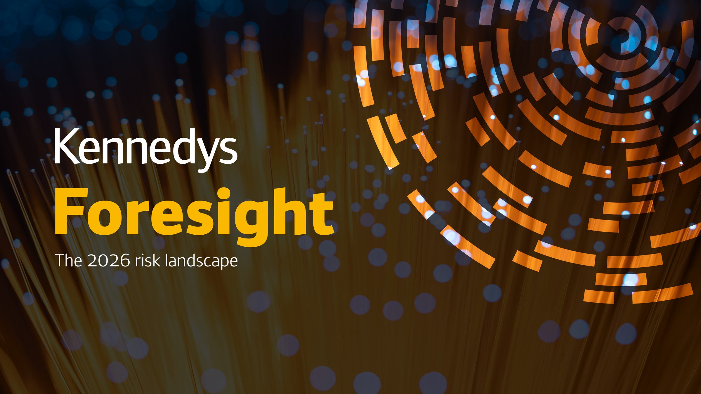
Released ahead of the full Foresight 2026 launch, this short teaser was designed to build anticipation across LinkedIn. No report. No data. Just enough to make the audience curious about what was coming. It ran for a week before the campaign went live.
An interview-led campaign film introducing the Foresight report, featuring senior Kennedys partners. Designed to drive engagement across LinkedIn and internal comms, setting the tone for the full campaign rollout.
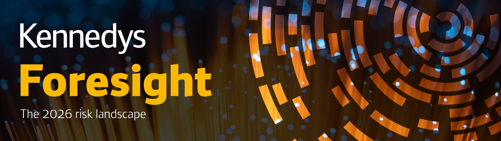
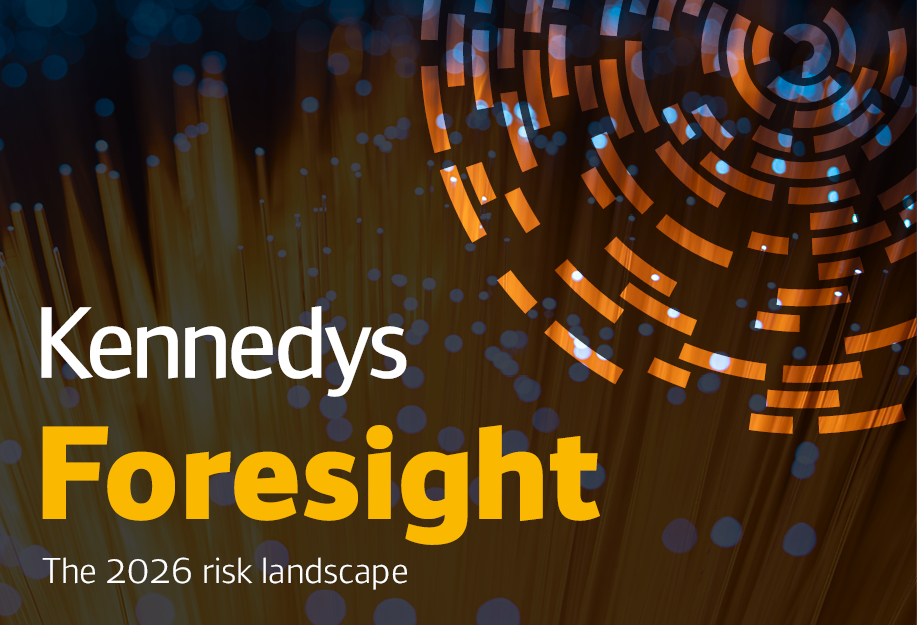
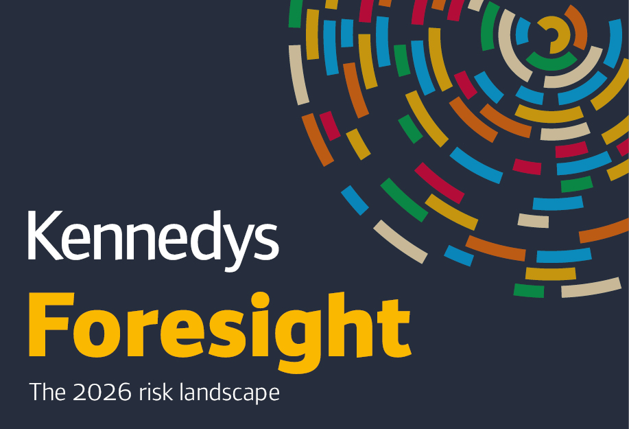
Most people meet the firm on a phone, so these are built for that screen rather than cut down from a widescreen edit. Each one is framed vertically, paced to be understood with the sound off, and typeset so the point lands before a thumb moves on. I take them from script and storyboard through animation to final delivery, which keeps the brand consistent and removes the wait for an outside studio.
The format of this work came out of the data rather than a preference. Working with the digital team, I went through the channel analytics and found that the audience was meeting the firm on a phone, not on a desktop. On that evidence the whole social output moved to a mobile first 1080 x 1350 frame. A portrait post takes up more of the feed, so the message has more room to land before someone scrolls past it. Every asset in this grid is built to that size.
They run across promotions, awards, pro bono work, conferences, recruitment and sector insight, every one built on the same grid, type scale and colour rules, so the firm reads as one organisation wherever it posts. The same system is packaged as templates, so teams in other offices produce their own without the brand drifting. Four are carousels: use the arrows to page through them.
That is how I prefer to work generally. I check design decisions against what the numbers actually show, then revisit them when the behaviour changes, so the output keeps improving instead of settling into a house habit. Consistency matters, but it should never be the reason a format stops being questioned.
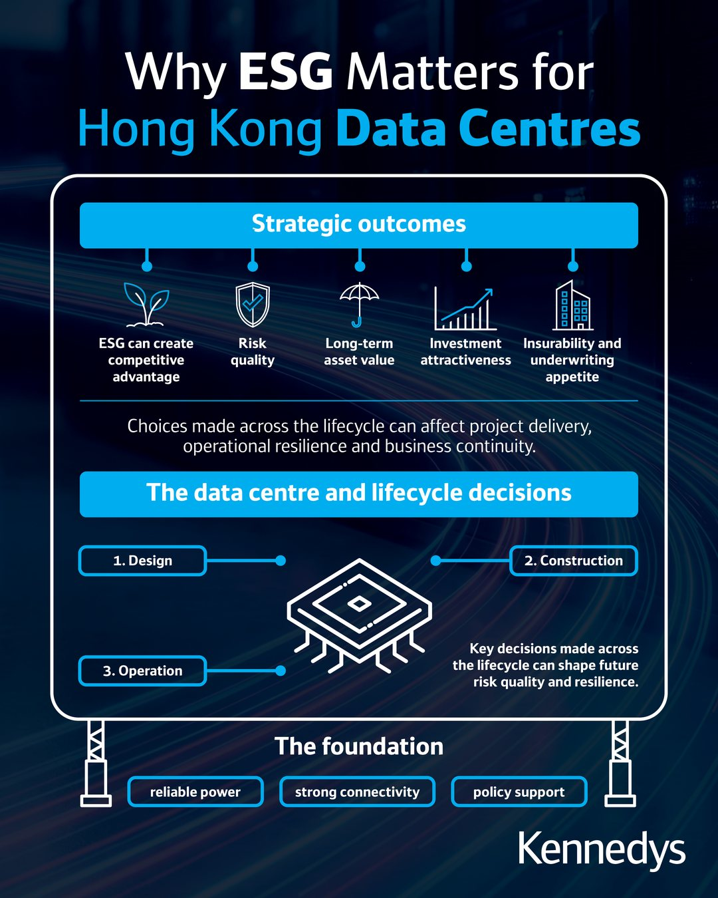
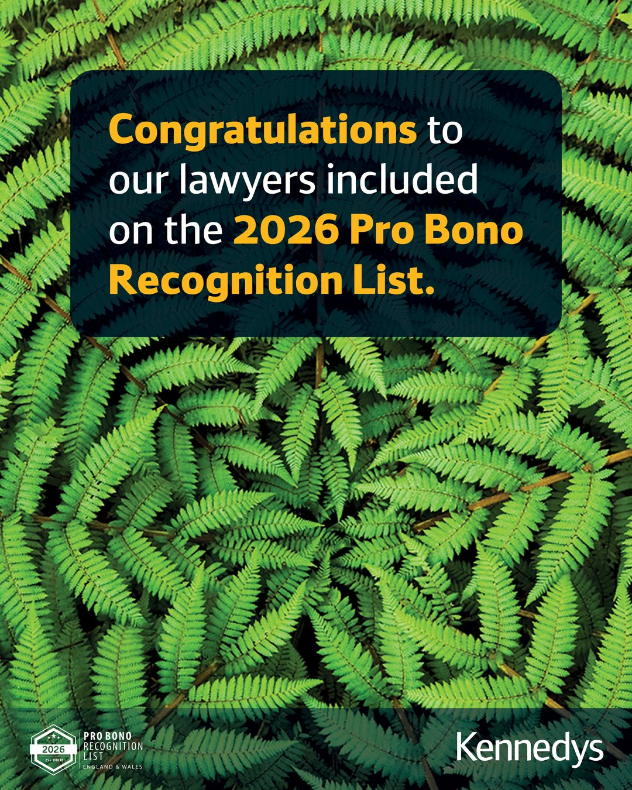
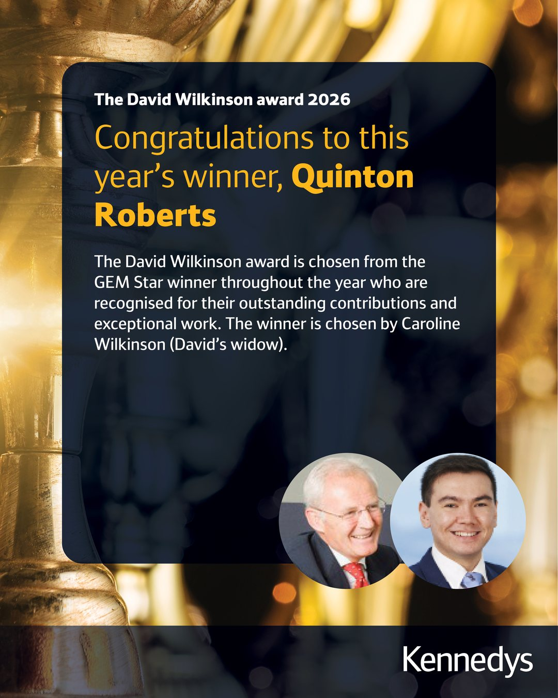

Three homepage concepts developed as part of an upcoming Kennedys brand refresh. Proposed directions exploring how the firm's digital presence could evolve to better reflect its global scale and creative ambition.


A firm-wide internal campaign built to launch Kennedys' Global Strategic Plan, the organisation's multi-year growth framework. The brief required something that felt genuinely ambitious: a visual identity strong enough to carry across video, digital, print, and live events, while landing with both partners and staff. Every asset, from the opening concept to the final suite of seven films, was conceived, designed, and produced in-house.
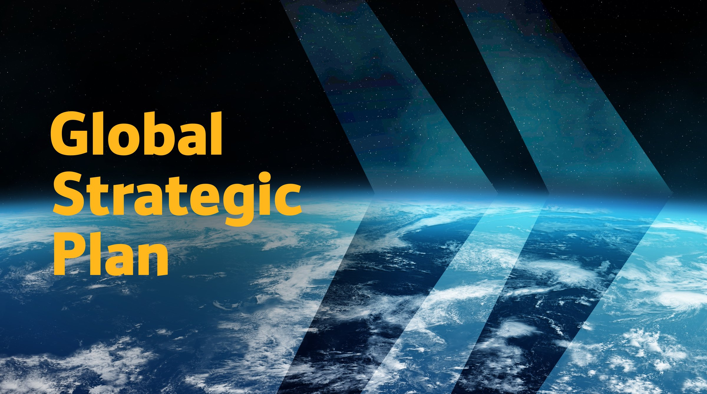
Before a single asset was produced, the visual direction went through a rigorous exploration phase. Multiple creative directions were developed and pressure-tested before a route was selected. Scroll to see the full breadth of the thinking.
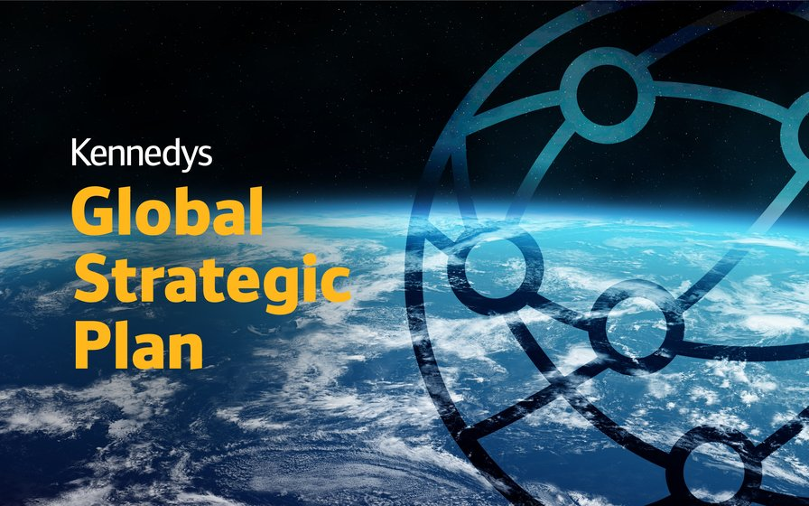
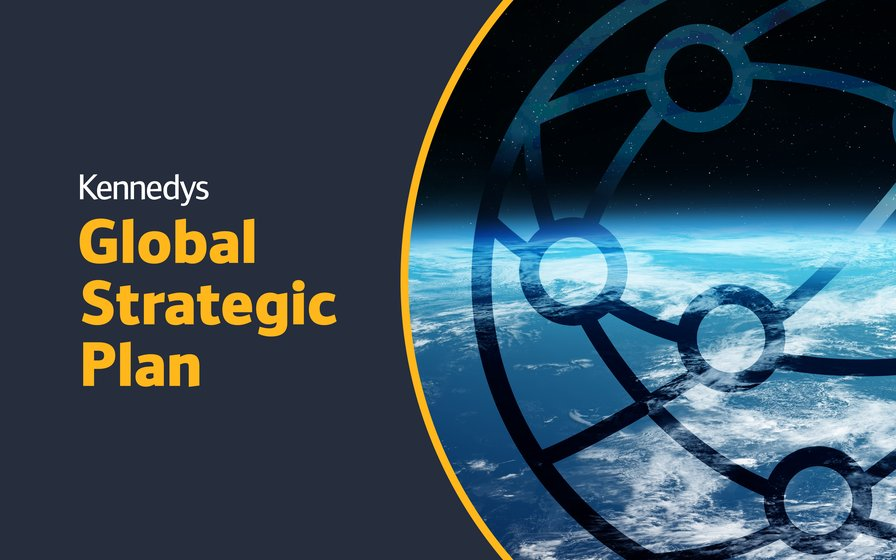
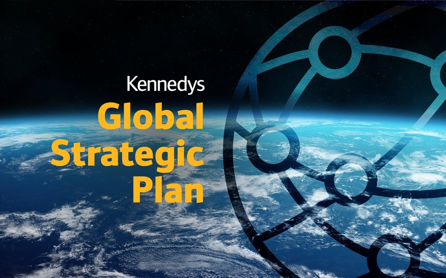
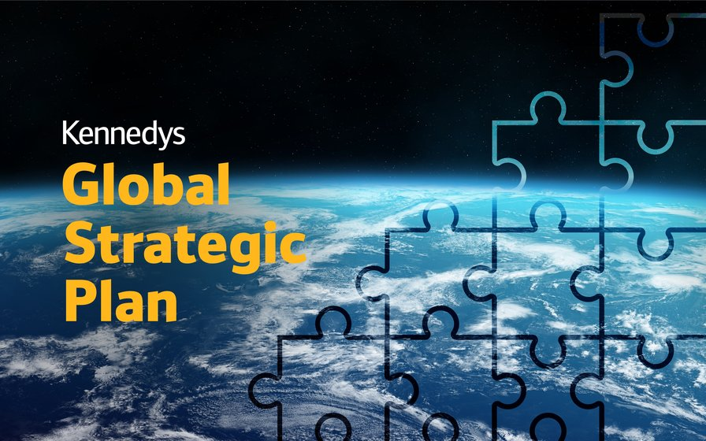
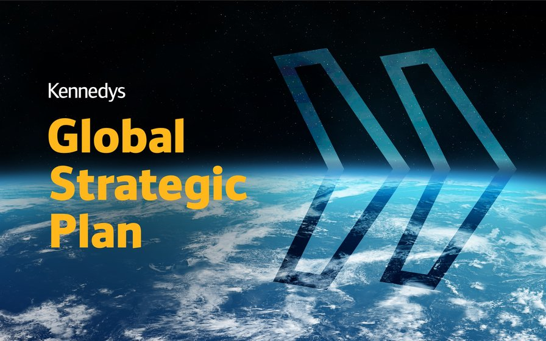
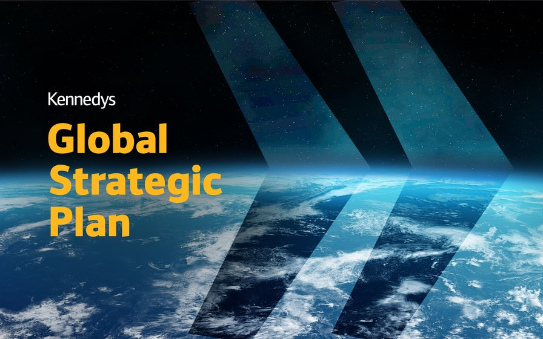
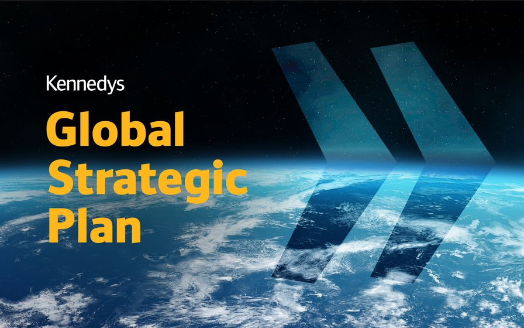
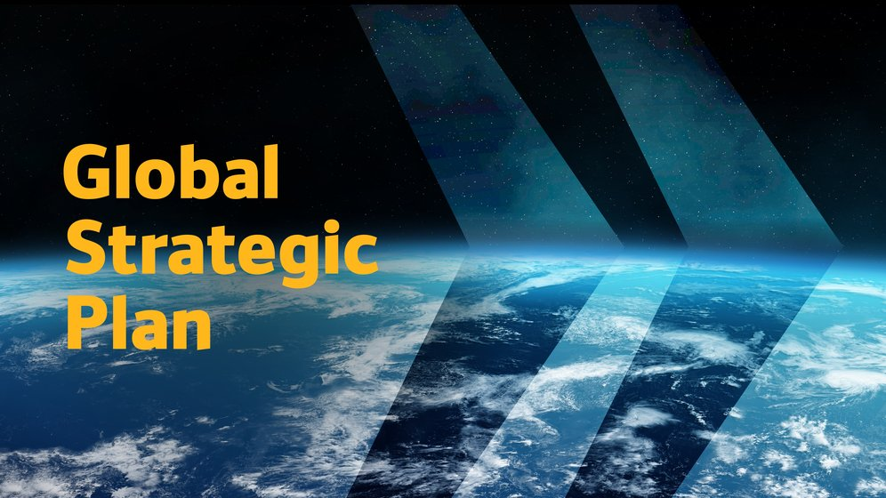
A series of seven films produced entirely in-house, covering the full scope of the strategic plan: introduction, people, clients, innovation, finance, growth, and a firm-wide town hall. Each video was scripted, designed, and delivered as part of a single coordinated campaign rollout.
Legal and financial material arrives dense and undifferentiated. The work is deciding what a reader needs first, giving it the weight to be seen, and letting everything else fall in behind it. These are used with partners, clients and candidates, so the numbers have to stay credible while the page stays inviting. Both are built from the firm's chart and icon language, so a reader recognises them as Kennedys before they read a word.
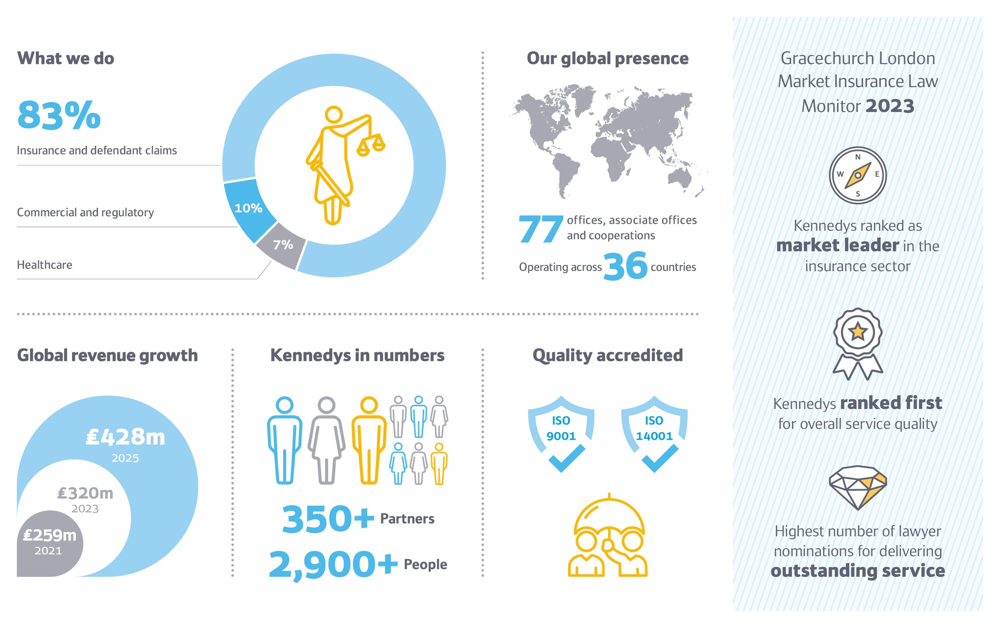
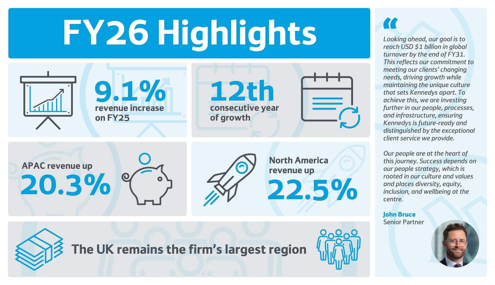
Kennedys had no video or motion capability when I arrived. I built it from scratch, establishing an end-to-end production pipeline that brought previously outsourced studio work in-house. The result was faster turnarounds, tighter brand consistency, and a creative output that now directly supports the firm's most high-profile campaigns, global partner events, and business development pitches across international markets.
The output documented on this page tells one story: a creative function that went from scattered and reactive to structured, strategic, and genuinely ambitious. Two major integrated campaigns. Fourteen campaign videos produced in-house. Regional content adapted across three global markets. A stakeholder presentation that aligned the firm's senior leadership on a single creative direction. Email, social, print, and digital collateral all produced without a single external studio brief.
That scale of output only happens when the infrastructure is right, when the brand guidelines, the DAM system, the production pipelines, and the team culture are all pulling in the same direction. Building that infrastructure is what this role has been. The campaigns are the proof of what it makes possible.